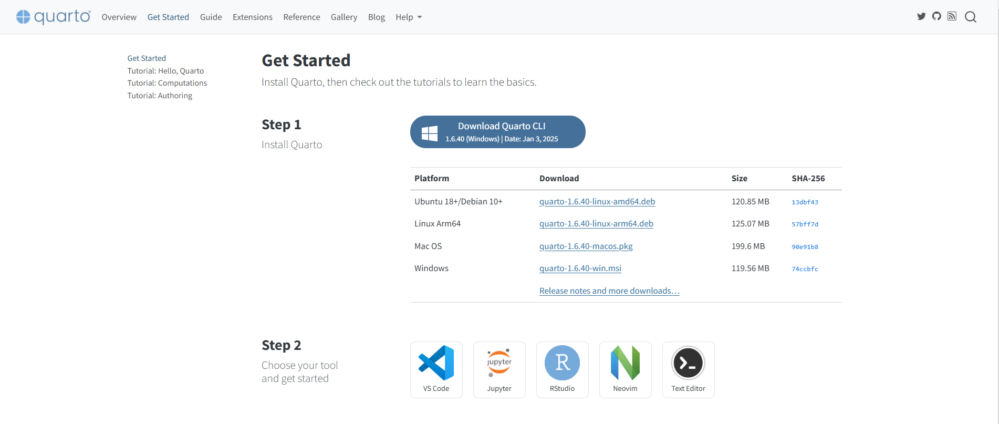

James Madison University
Road map for this session:
Please feel free to put questions in the chat as they come up
It is assumed you have R and RStudio installed on your machines - if not, there’s time to do it now!
We will install Quarto shortly
Let’s ask a different question:
How do you currently analyze your data? (answers may be along the lines of Excel workbooks, SPSS dropdowns, SPSS syntax, R, Python, SAS, etc.)
Why use syntax over dropdown menus?
Documentation and reproducibility!
Similarly, we can document the steps we took to analyze the data and generate reports
Along with documentation, the reproducibility aspect can save time in a multitude of ways
Using a Parent/Child format allows for automatic, disaggregated generation of multiple reports (no more manually creating each and every report!)
We will dive deeper into Parent/Child structure in a bit
Briefly, you can take one large dataset and make individualized reports based on program, college, department, etc.
Think test score reports children may get, or SAT/GRE/ACT/PRAXIS score reports
Quarto is an “open-source scientific and technical publishing system”
In plain terms: it lets you integrate plain text markdown, code, output, and visualizations all in one document.
Allows for a variety of outputs: PDF, HTML, Word, etc.
Let’s get started downloading it now: https://quarto.org/docs/get-started/
---
title: "Untitled"
format: html
editor: visual
---
## Quarto
Quarto enables you to weave together content and executable code into a finished document. To learn more about Quarto see <https://quarto.org>.
## Running Code
When you click the **Render** button a document will be generated that includes both content and the output of embedded code. You can embed code like this:
```{r}
1 + 1
```
You can add options to executable code like this
```{r}
#| echo: false
2 * 2
```
The `echo: false` option disables the printing of code (only output is displayed).---
title: "Untitled"
format: html
editor: visual
------
title: "Report Generation with Quarto"
author: Laura Lambert & Josiah Hunsberger
institute: James Madison University
format:
revealjs:
theme: default
slide-tone: false
preview-links: auto
title-slide-attributes:
data-background-image: rsz_1rsz_lakeview_overview.jpg
data-background-opacity: "0.5"
---```{r}
#Call libraries
library(tidyverse)
#Read in data
data(iris)
#Summarize data by species
iris |>
group_by(Species) |>
summarise(mean_pw = mean(Petal.Width), sd_pw = sd(Petal.Width))
```Code chunks work just like code in a script file - you can have code, comments, functions, etc.
$\sigma^{2}$ renders into \(\sigma^{2}\)
and
$$y = mx + b$$ renders into \[y = mx + b\]
It looks weird in your raw file - there’s a bit of trust the process that goes on!
```{dot}
digraph Gr {
rankdir = TD
node [
style = filled
shape = oval]
a1 -> {a2 a3};
a2 -> a4;
a3 -> a5;
{a4 a5} -> a6
a1[label = "Some Topic" fillcolor=white]
a2[label = "Sub-Topic 1" ]
a3[label = "Sub-Topic 2"]
a4[label = "Some Other Topic" fontcolor=red]
a5[label = "Yet Another\nTopic" fillcolor="#7AD151FF"]
a6[label = "A Final Topic"]
}
```# A tibble: 3 × 3
Species mean_pw sd_pw
<fct> <dbl> <dbl>
1 setosa 0.246 0.105
2 versicolor 1.33 0.198
3 virginica 2.03 0.275---
title: "Some Creative Title"
author: Your Name
format: pdf
------
title: "Some Creative Title"
author: Your Name
toc: TRUE
format: html
---```{r Libraries}
#| warning: FALSE
#| message: FALSE
required_packages <- c("tidyverse", "ggplot2", "openxlsx", "psych", "stringr")
# Check and install packages if needed
for (pkg in required_packages) {
if (!requireNamespace(pkg, quietly = TRUE)) {
install.packages(pkg)
library(pkg, character.only = TRUE)
} else {
library(pkg, character.only = TRUE)
}
}
``````{r Folders}
# The first line creates a "parent folder" named "Reports" in the current working directory.
# The second line creates a "subfolder" named "Tables" within the "Reports" folder.
dir.create("./Reports") # Creates the "Reports" folder in the current working directory
dir.create("./Reports/Excel Workbooks") # Creates the "Tables" subfolder within the "Reports" folder
# The "Tables" subfolder is useful if saving out Excel sheets for each assessment. This is helpful when dealing with a large number of assessments as well as a large number of automated reports.
dir.create("./Data") # Creates a folder to house data files to maintain a consistent folder structure for year-to-year or semester-to-semester reporting
dir.create("./Children") # Creates a folder to house the child/children files we will create
``````{r File Paths}
# Define file paths for a project folder structure
# The base path is set to the current working directory using "./".
# All subsequent file paths are constructed relative to this base path.
path <- "./" # Base path representing the current working directory
# File paths for specific subdirectories:
Children_file_path <- paste0(path, "Children/") # Path for the "Children" folder
data_file_path <- paste0(path, "Data/") # Path for the "Data" folder
report_file_path <- paste0(path, "Reports/") # Path for the "Reports" folder
# Specify the data file name below
# Housing in the parent file enables for higher flexibility of the Child file
data_file_name <- "Data_Large"
``````{r Factors}
probe <- read.xlsx(paste0(data_file_path, "Data.xlsx"))
# This is a simple simulated data set that is likely not reflective of real data; however, you can may already know how you want to segment your data for reporting.
# Select only the columns with character data - Since our classifying characteristics (e.g., Year, Semester, Program) are the only character values this is a quick and easy way to isolate out values.
probe <- probe[, sapply(probe, is.character)]
unique_values <- lapply(probe, unique)
``````{r Child}
#Program Specific
programs <- unique_values$Program # Pulling from out unique_values list
for (i in 1:length(programs)) {
program_name <- programs[i]
# Use the Value names specified in the latest for loop
# This will vary the name of the file output for each group analyzed
output <- paste0(report_file_path, "/", program_name, "_Report.docx")
rmarkdown::render(
# The name of the Child file you are using - YOU NEED TO MAKE THIS!
input = "./Program_Gen_File.qmd",
# The naming convention of the output file
output_file = output,
# params are the list of parameters ported over from the Parent file into the Child file.
# You must update the YAML header under "params" to reflect the variables you are porting over.
params = list(program_name = program_name)
)
}
``````{r Child}
#Program Specific
programs <- unique_values$Program # Pulling from out unique_values list
for (i in 1:length(programs)) {
program_name <- programs[i]
output_file_name <- paste0(program_name, "_Report.docx")
output_path <- file.path(report_file_path, output_file_name)
# Use the Value names specified in the latest for loop
# This will vary the name of the file output for each group analyzed
quarto::quarto_render(
# The name of the Child file you are using
input = "Child_101.qmd",
# The naming convention of the output file defined above
output_file = output_file_name,
# params are the list of parameters ported over from the Parent file into the Child file.
# You must update the YAML header under "params" to reflect the variables you are porting over.
execute_params = list(program_name = program_name)
)
#Moves the file to the correct folder (i.e. Reports)
file.rename(output_file_name, output_path)
}
```---
title: "Score Report"
format: docx
toc: true
params:
program_name: NA
# If adding more or different parameters (e.g., Year, Semester) will need to add to or change the params list.
---```{{r setup, include=FALSE}} #| warning: FALSE #| message: FALSE
knitr::opts_chunk$set(error=FALSE)
options(digits = 3) # Setting the number of digits for the entire document
library(openxlsx) library(tidyverse)
Using the provided guide parent/child files:
```{r Average Score Table}
#| echo: FALSE
# Filtering by program
filtered_df <- data %>%
filter(Program == program, Year == Years, Semester == Sem)
# Creating Total score
filtered_df$Tot <- rowSums(filtered_df[5:16])
aggregated_df <- filtered_df %>%
group_by(Year) %>%
summarise(Average_Score = mean(Tot, na.rm = TRUE))
``````{r Average Score Graph}
#| echo: FALSE
#| warning: FALSE
ggplot(filtered_df, aes(x = Tot, fill = Year)) +
geom_histogram(aes(y = ..density..), alpha = 0.5, bins = 30, position = "identity") +
geom_density(aes(color = Year, fill = Year), alpha = 0.5, linewidth = 1) +
scale_fill_manual(values = c("First" = "#450084", "Second" = "#CBB677")) +
scale_color_manual(values = c("First" = "#450084", "Second" = "#CBB677")) +
theme_minimal() +
labs(title = "Distribution of Total Scores", x = "Total Scores", y = "Density")
``````{r Average Score Table}
#| echo: FALSE
# Filtering by program
filtered_df <- data %>%
filter(Program == program, Year == Years, Semester == Sem)
# Creating Total score
filtered_df$Tot <- rowSums(filtered_df[5:16])
aggregated_df <- filtered_df %>%
group_by(Year) %>%
summarise(Average_Score = mean(Tot, na.rm = TRUE))
# Print out to table
flextable(aggregated_df)
``````{r Child}
#Program Specific
Program_list <- unique_values$Program # Pulling from out unique_values list
Year_list <- unique_values$Year # Pulling from out unique_values list
Semesters_list <- unique_values$Semester # Pulling from out unique_values list
# Staged loop: Looping through Years, Semesters, and Programs
for (i in 1:length(Year_list)) {
for (j in 1:length(Semesters_list)) {
for (k in 1:length(Program_list)) {
Year <- Year_list[i]
Sem <- Semesters_list[j]
program_name <- Program_list[k]
# Use the Value names specified in the latest for loop
# This will vary the name of the file output for each group analyzed
output_file_name <- paste0(program_name, "_", Year, "_", Sem, "_Report.docx")
output_path <- file.path(report_file_path, output_file_name)
quarto::quarto_render(
# The name of the Child file you are using
input = "Child_501.qmd",
# The naming convention of the output file defined above
output_file = output_file_name,
# params are the list of parameters ported over from the Parent file into the Child file.
# You must update the YAML header under "params" to reflect the variables you are porting over.
execute_params = list(program_name = program_name, Year = Year, Sem = Sem)
)
#Move the file to the correct location
file.rename(output_file_name, output_path)
}
}
}
```---
title: "Program_Gen_File"
format: docx
toc: true
params:
program_name: NA
Year: NA
Sem: NA
# If adding more or different parameters (e.g., Year, Semester) will need to add to or change the params list.
---Using the guide parent/child files from your last activity: